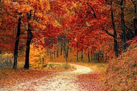
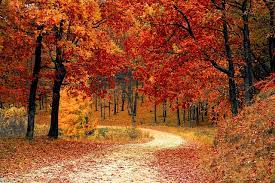
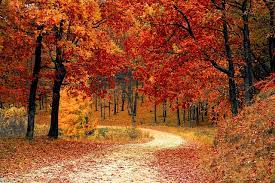

Designing a Webpage
Home
Welcome to Tech World! Relax and try to learn about the latest artificial intelligence.
Gallery

Menu
Pancakes and Berries
Pasta
Fried Chicken
Burgers
Chocolate Cake
Cottage Ice-cream

 
